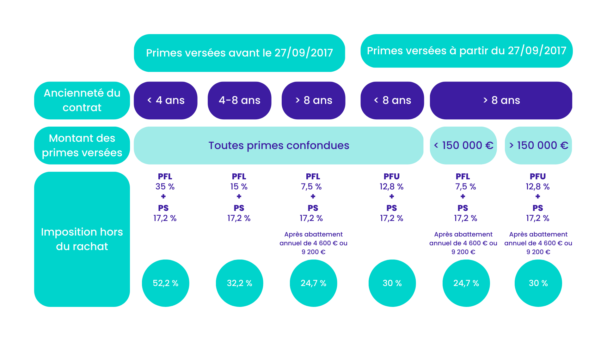

Comprendre l'assurance vie
Un outil d'épargne aux multiples facettes, adapté à de nombreux objectifs : placement, transmission, retraite.
Qu'est-ce que l'assurance vie ?
L'assurance vie est un contrat d'épargne souscrit auprès d'un assureur. Elle permet de faire fructifier votre argent dans un cadre fiscal avantageux, tout en gardant une grande souplesse dans les versements et les retraits.
Testez vos connaissances
Est-ce que mon argent est bloqué lorsque je place sur une assurance vie ?
Correct !
Non, votre argent n'est pas bloqué. Vous pouvez effectuer des retraits (rachats) à tout moment sur votre contrat d'assurance vie. Cependant, il est généralement conseillé de garder son contrat au moins 8 ans pour bénéficier des avantages fiscaux optimaux.
Incorrect
Contrairement à certaines idées reçues, l'argent placé sur une assurance vie reste disponible. Vous pouvez effectuer des retraits partiels ou totaux (rachats) à tout moment. Toutefois, pour profiter pleinement des avantages fiscaux, il est recommandé de conserver votre contrat au moins 8 ans.
L'assurance vie permet-elle de transmettre un capital à ses proches en cas de décès ?
Correct !
Oui, l'assurance vie est un excellent outil de transmission. En cas de décès, le capital est versé aux bénéficiaires que vous avez désignés, en dehors de la succession. Cela permet de transmettre jusqu'à 152 500€ par bénéficiaire sans droits de succession (pour les versements effectués avant 70 ans).
Incorrect
L'assurance vie est justement un des meilleurs outils pour transmettre un capital à ses proches. En cas de décès, les sommes sont versées aux bénéficiaires que vous avez désignés, et bénéficient d'une fiscalité avantageuse avec une exonération jusqu'à 152 500€ par bénéficiaire pour les versements effectués avant 70 ans.
À quoi sert-elle ?
💰 Épargner
Constituer une épargne à moyen ou long terme, avec différents supports d'investissement (fonds en euros, unités de compte).
🎯 Préparer un projet
Financer un achat immobilier, les études des enfants ou compléter sa retraite.
🏠 Transmettre son patrimoine
Optimiser la transmission à vos proches grâce à une fiscalité allégée.
Fonctionnement simplifié
Vous versez de l'argent sur le contrat. Celui-ci est ensuite investi, selon votre choix, sur un ou plusieurs supports. Vous pouvez retirer votre argent à tout moment. Au bout de 8 ans, la fiscalité devient encore plus avantageuse.

Exemple de fonctionnement simplifié d'un contrat d'assurance vie.
Quels avantages fiscaux ?
L'assurance vie offre une fiscalité allégée sur les gains après 8 ans, ainsi que des exonérations intéressantes en cas de transmission aux bénéficiaires désignés.
Il est important de bien définir vos objectifs (épargne, transmission, retraite) pour choisir les bons supports et adapter votre contrat à votre situation.